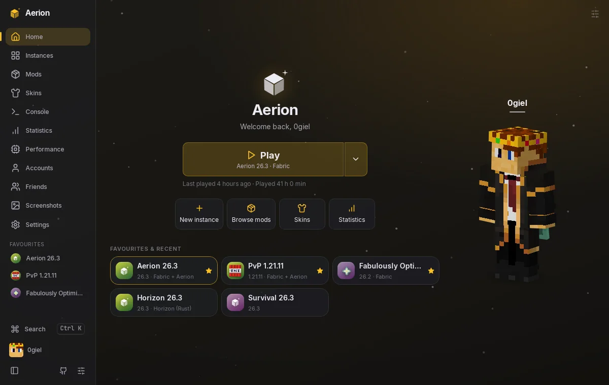
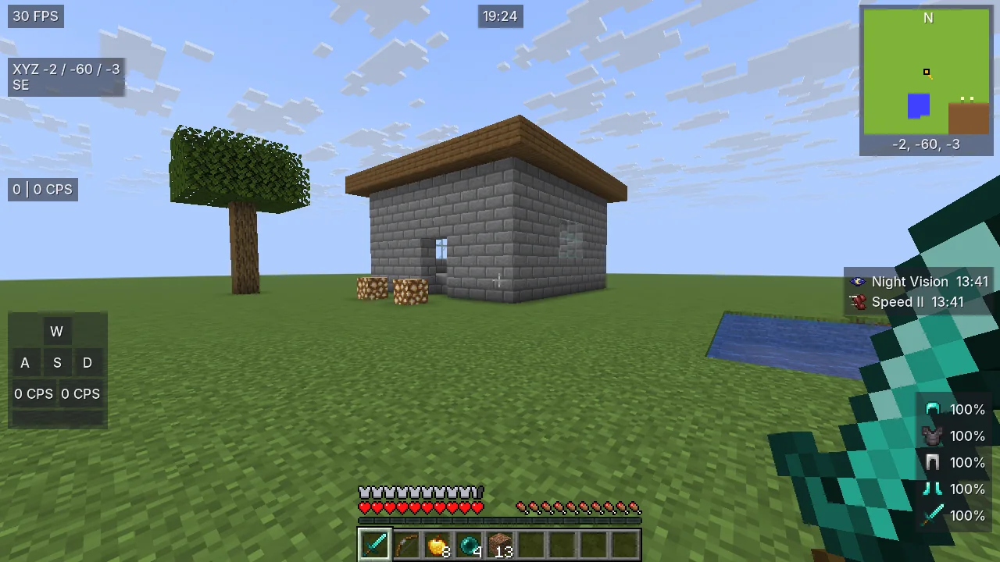
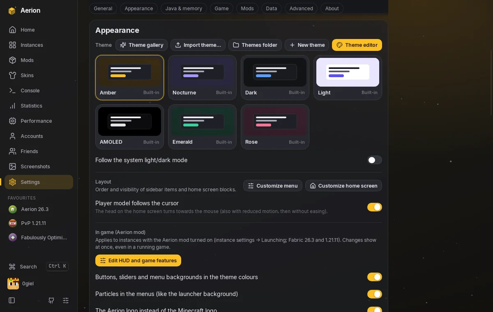
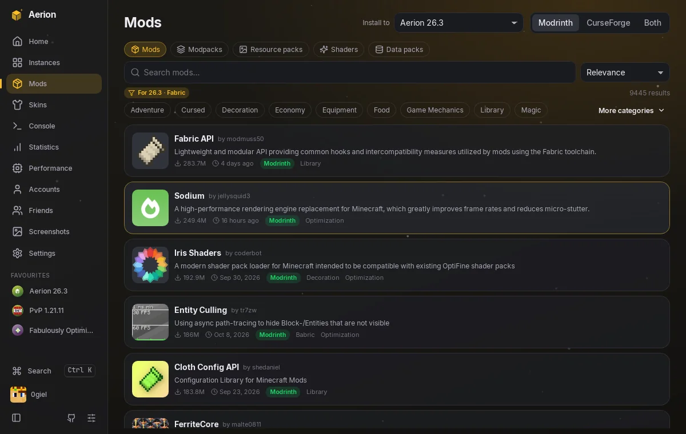

Mody i paczki
Fabric, Quilt, Forge i NeoForge, mody i paczki z Modrinth jednym kliknięciem, z zależnościami.
Wersja 1.0 · Windows i Linux
Szybki, lekki i bardzo konfigurowalny. Własny mod z HUD-em układanym myszką, motywy w menu gry, mody z Modrinth i zero zbierania danych.
Wymaga konta Microsoft z kupionym Minecraftem: Java Edition.

Przeciągaj moduły i przełączaj gotowe style. To ten sam pomysł, co w grze.
Podpowiedź: w grze każdy moduł ma też własne reguły, np. „pokazuj tylko w walce".
Ponad dwadzieścia modułów — FPS, współrzędne, strefy, klawisze, mapa — każdy z własnym wyglądem, kotwicą i regułami: pokazuj w walce, ukryj pod ziemią, zniknij po kilku sekundach.


Edytor motywów z podglądem na żywo, galeria motywów i animowane tła. Kolory launchera trafiają do menu Minecrafta, a położenie menu, jego styl i efekty ustawiasz w samym motywie.
Fabric, Quilt, Forge i NeoForge, mody i paczki z Modrinth jednym kliknięciem, z zależnościami.
Mapa w grze z dodawaniem punktów, punkt śmierci i udostępnianie współrzędnych na czacie.
Klawiatura w grze z podświetlonymi konfliktami, także wspólna w launcherze.
Analiza błędów gry i poprawki jednym kliknięciem, konsola gry w launcherze.
Launcher pobiera nowe wersje w tle, a mod aktualizuje się niezależnie od niego.
Bez zbierania danych. Kod otwarty na licencji GPL-3.0.

Tak. Logujesz się oficjalnym kontem Microsoft i potrzebujesz kupionej gry. Aerion to nieoficjalny launcher, nie jest powiązany z Mojang ani Microsoft. Kod jest otwarty, a aktualizacje są podpisane.
Nie. Nie ma analityki ani śledzenia. Launcher łączy się tylko z usługami potrzebnymi do działania: Microsoft, Mojang, Modrinth i GitHub.
Tak, są pakiety .deb i AppImage obok wersji dla Windows.
Na Discordzie (kanały zgłoszeń i pomysłów) albo w zakładce Issues na GitHubie.